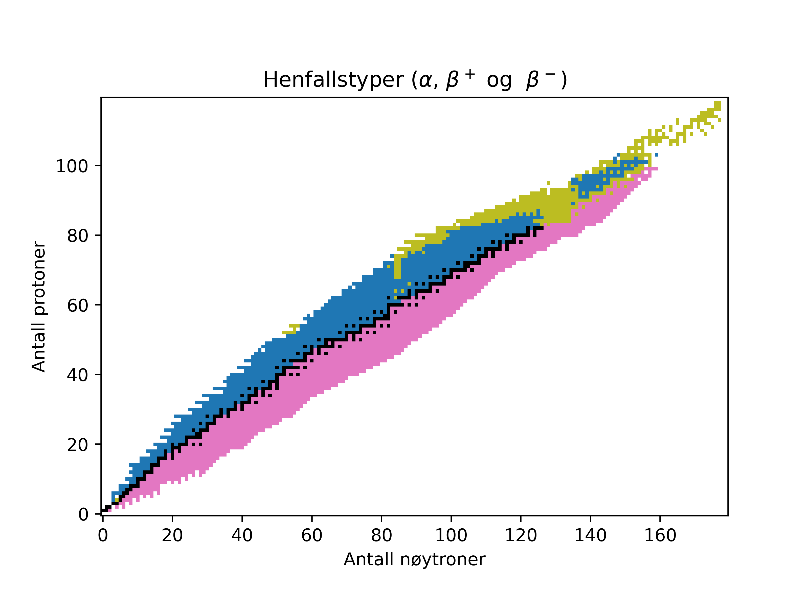

Isotoper og henfall#
Du har sikkert hørt om grunnstoffene før, men visste du at det finnes mange forskjellige versjoner av grunnstoffene, og at noen av disse er radioaktive?
Atomkjernen består av protoner og nøytroner. Antallet protoner bestemmer hvilket grunnstoff det er snakk om. Hvis et stoff har atomkjerner med \(6\) protoner, så er stoffet karbon.
Antallet nøytroner kan variere. Karbon med \(6\) protoner og \(6\) nøytroner har navnet Karbon-12, mens karbon med \(6\) protoner og \(8\) nøytroner har navnet Karbon-14. Disse kalles for isotoper av karbon.
Isotop |
Nukleoner |
Symbolsk |
Henfall |
|---|---|---|---|
Karbon-12 |
\(6\) protoner, \(6\) nøytroner |
\(^{12}_6C\) |
Stabil |
Karbon-13 |
\(6\) protoner, \(7\) nøytroner |
\(^{13}_6C\) |
Stabil |
Karbon-14 |
\(6\) protoner, \(8\) nøytroner |
\(^{14}_6C\) |
\(\beta -\) |
Noen isotoper er stabile og noen er radioaktive. Radioaktive isotoper sender ut stråling på forskjellige måter. Vi skal se på noen av disse.
Typer henfall#
Når en radioaktiv isotop sender ut stråling sier vi at den henfaller. Radioaktive isotoper kan henfalle på flere forskjellige måter. Vi skal se på fire forskjellige typer henfall.
\(\alpha\)-henfall: En atomkjerne sender ut en heliumkjerne, som består av to protoner og to nøytroner.
\(\beta ^-\)-henfall: En atomkjerne sender ut et elektron og et antinøytrino.
\(\beta ^+\)-henfall: En atomkjerne sender ut et positron og et nøytrino.
\(\gamma\)-henfall: En atomkjerne sender ut elektromagnetisk stråling med høy energi.
Her er en oversikt over mange tusen forskjellige isotoper og hvordan de henfaller.
Den blå fargen betyr \(\beta ^+\)-henfall, rosa betyr \(\beta ^-\)-henfall og den gule betyr \(\alpha\)-henfall.
Tenk
Hva kan du si kjennetegner isotopene som henfaller med \(\beta ^+\), \(\beta ^-\) og \(\alpha\) ved å se på figuren?
Når en isotop henfaller med \(\alpha\), \(\beta ^-\) eller \(\beta ^+\) så endres atomkjernen, og vi får en helt annen isotop.
Henfallstype |
Endring |
Eksempel på hvordan kjernen henfaller |
|---|---|---|
\(\alpha\) |
-2 protoner og -2 nøytroner |
\(^{238}_{92}U \rightarrow ^{234}_{90}Th\) |
\(\beta ^-\) |
-1 nøytroner og +1 protoner |
\(^{14}_{6}C \rightarrow ^{14}_{7}N\) |
\(\beta ^+\) |
-1 protoner og + 1 nøytroner |
\(^{23}_{12}Mg \rightarrow ^{23}_{11}Na\) |
\(\gamma\) |
ingen endring i antall partikler |
\(^{99m}_{43}Tc \rightarrow ^{99}_{43}Tc + energi\) |
Isotoper kan henfalle på forskjellige måter
Astat-219 har \(93.6\%\) sannsynlighet for å henfalle med \(\alpha\)-henfall, men det er også \(6.4\%\) sannsynlighet for at den henfaller med \(\beta ^-\). Figuren over viser den mest sannsynlige henfallstypen.
Henfallskjeder#
Ustabile isotoper henfaller og blir til et isotop av et annet stoff. Resultatet kan også være radioaktivt og henfalle igjen.
Da får vi det som kalles en henfallskjede. Her er et eksempel på henfallskjeden til Radon-214.
\(^{214}_{86}Ra \rightarrow ^{210}_{84}Po \rightarrow ^{206}_{82}Pb\)
Tenk
Forsøk å se hvilke typer henfall som har skjedd ved hvert steg i henfallskjeden. Hvilke partikler har blitt sendt ut?
Programmering: Finne henfallstype#
Her er et lite program som gjør at man kan slå opp den mest sannsynlige henfallstypen for en gitt isotop.
Programmet spør om en isotop og printer hvordan denne isotopen henfaller. Her er utskriften fra programmet når vi skriver inn U-238.
Isotop: U-238
A
Vi ser at Uran-238 mest sannsynlig vil henfalle med \(\alpha\)-henfall.
Data om henfallstyper er hentet fra The NUBASE 2020 evaluation of nuclear physics properties - F.G. Kondev, M. Wang, W.J. Huang, S. Naimi, and G. Audi, Chin. Phys. C45, 030001 (2021)
Oppgaver#
Oppgave 1
Bruk programmet i eksempelet over til å finne hvordan stoffene henfaller
Hvordan henfaller disse stoffene? Finn hvilke isotoper de henfaller til.
Po-211
K-40
Ra-226
F-18
Blir noen av stoffene til stabile isotoper? (etter ett henfall)
Oppgave 2
Undersøk denne henfallskjeden.
\(^{213}_{84}Po \rightarrow ^{209}_{82}Pb \rightarrow ^{209}_{83}Bi \rightarrow ^{205}_{81}Tl\)
Hvilke henfall har skjedd? Hvis vi antar at en isotop har henfalt gjennom alle stegene, hvilke partikler har totalt blitt sendt ut som ioniserende stråling?
Oppgave 3
Bruk programmet i eksempelet over til å finne hvordan stoffene henfaller
Finn hele henfallskjeden til Uran-238.